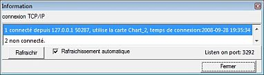
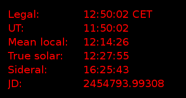

Menú Veure
{kind=link}
Pantalla completa
Engrandeix la finestra CdC per omplir la pantalla. La presentació de les barres d'eines, del menú, d'estat, dels cursors i de la barra d'icones no canvia.
Un nou clic restableix la mida original de la finestra.
La tecla F11 fa la mateixa acció.
Visió nocturna
Un clic sobre aquesta opció fa alternar els colors del mapa entre la pantalla normal i la pantalla de visió nocturna:
fons negre, colors rogencs per a les graelles, etiquetes i d'altres marques, icones de les barres d'eines del color definit en Configuració > Presentació > Colors de presentació.
En Windows VISTA, el color de fons de l'escriptori passa a un gris mitjà.
També podeu activar o desactivar la visió de nit fent clic a la icona  en la *barra principal.
===== Barres d'eines =====
en la *barra principal.
===== Barres d'eines =====
Mostra un submenú que conté aquestes entrades :
* Totes les barres d'eines mostra o amaga totes les barres llevat de la barra dels menús (abreujat: Ctrl+B).
* Barra principal mostra o amaga la barra horitzontal de sota la barra dels menús, dalt del mapa.
* Barra d'objectes mostra o amaga la barra horitzontal a sota de la barra principal a la part superior de la carta.
* Barra de l'esquerra mostra o amaga la barra vertical a l'esquerra del mapa.
* Barra dreta mostra o amaga la barra vertical a la dreta del mapa.
* barra_d_estat|Barra d'estat]] mostra o amaga la barra horitzontal de sota el mapa.
===== Barra de desplaçament =====
Mostra o amaga les barres de desplaçament del mapa, al peu i a la dreta. Això us permet de moure el mapa amb el cursor aplicat a les barres de desplaçament, tal com s'estila en la majoria de programes.
Encara podreu desplaçar el mapa dins de la finestra sense aquestes barres per diferents mitjans:
* mantenint la tecla “Maj” premuda, arrossegueu el mapa amb el botó esquerre del ratolí premut.
* utilitzeu les fletxes amunt, avall, dreta, esquerra del teclat conjuntament amb o sense les tecles “Ctrl”, “Maj” o bé “Alt” per variar la quantitat de desplaçament. Per a aquestes possibilitats, vegeu dreceres de teclat.
===== Informació del servidor =====

Mostra l'estat de les connexions TCP/IP als clients de CdC; podeu reinicialitzar-les una a una o triar “Refresca automàticament”.
També podeu tancar una connexió fent clic en una línia amb el botó dret.
===== Rellotge =====

Mostra una finestra amb informació sobre l'hora actual.
Inclou les següents dades:
* Hora oficial per a la vostra zona horària.
* Hora universal.
* Hora solar local mitjana per a la vostra longitud geogràfica.
* Hora solar vertadera, basada en l'angle horari aparent del Sol.
* Hora sideral local.
* Dia julià (TU)
Aquest rellotge ve com un programa separat, de nom cdcicon. Un cop instal·lat el paquet de Cartes del Cel-SkyChart, el rellotge podrà fer-se funcionar independentment des del directori d'instal·lació del programa. Els administradors sota Windows poden activar-lo també des de la barra de tasques.
Si voleu canviar l'hora usada per Cartes del Cel, feu clic a la icona  de la barra esquerra, o del menú Configuració → Data/Hora.
===== Fixeu el camp de visió =====
de la barra esquerra, o del menú Configuració → Data/Hora.
===== Fixeu el camp de visió =====
Això fa possible una variació continuada del camp de visió. Quan feu clic en aquesta opció s'obre una finestreta de diàleg amb un cursor d'escala logarítmica. Feu_hi clic i mantenint-lo premut arrossegueu-lo fins aconseguir el camp de visió que desitgeu.
És la mateixa funció que obteniu quan feu clic a la icona  del grup zoom de la barra principal.
del grup zoom de la barra principal.
Si desitgeu establir un camp de visió molt precís, feu-ho des de Veure → Posició.
===== Zoom augment =====
Divideix el camp de visió per dos.
La icona + de la barra principal és una drecera per a aquesta funció. També podeu variar el camp de visió amb la roda del ratolí. Vegeu més opcions sobre canvi del camp de visió a dreceres de teclat.
===== Zoom disminució =====
Multiplica el camp de visió per dos.
La icona - de la barra principal és una drecera per a aquesta funció. També podeu variar el camp de visió amb la roda del ratolí. Vegeu més opcions sobre canvi del camp de visió a dreceres de teclat.
===== Posició =====
En fer-hi clic surt una caixa de diàleg on podeu llegir o fixar els paràmetres de posició del centre del mapa actiu. La posició pot ser en qualsevol classe de graella de coordenades. Podeu llegir-hi o fixar-hi els paràmetres del camp de visió o l'angle de rotació del mapa. Feu clic aquí per llegir-ne tots els detalls.
Si feu clic en la icona  de la barra principal obtindreu la mateixa caixa de diàleg.
===== Llista dels objectes =====
de la barra principal obtindreu la mateixa caixa de diàleg.
===== Llista dels objectes =====
Amb aquesta opció obtindreu una llista dels objectes mostrats en el mapa. Podeu filtrar els tipus d'objectes a llistar configurant-ho en la pestanya Llista dels objectes, en el menú: Configuració → Carta, Coordenades.
També podeu obtenir aquesta llista d'objectes fent clic a la icona  en la barra principal.
===== Imatge parpellejant =====
en la barra principal.
===== Imatge parpellejant =====
Amb aquesta opció podeu fer que una imatge FITS carregada prèviament parpellegi sobre el mapa original de la mateixa zona.
També ho podeu fer fent clic a la icona específica que hi ha a la barra d'objectes, en el grup d'imatges.
Si no haguéssiu carregat cap imatge aquesta opció no faria res.
Per llegir com carregar una imatge FITS des d'una font local, feu clic aquí.
Per ampliar informació sobre com baixar una imatge en línea des del Digital Sky Survey (DSS), feu clic aquí.
I per mostrar o amagar aquestes imatges feu clic aquí.
Per saber com configurar els recursos del DSS per descarregar aquestes imatges feu clic aquí.
===== Mostra el color del cel =====
Quan mostreu el mapa amb la graella d coordenades altazimutals i heu configurat el color del cel com “automàtic”, es possible que el color del cel de fons sigui massa clar.
Aquest és el cas quan l'hora i la posició configurats sigui tal que el Sol no estigui més avall dels 18 graus sota l'horitzó (horari diürn, o encara no s'hagi aconseguit la foscor astronòmica, o bé la Lluna estigui sobre de l'horitzó). En aquest cas, l'opció Mostra el color del cel alterna amb cada clic entre les posibilitats “Fixat negre” i el color generat amb la configuració “Automàtic”.
Podeu fer la mateixa alternança fent clic a la icona  en Grup marques de la barra d'objectes.
en Grup marques de la barra d'objectes.
Per configurar el color del cel, tant el fix com l'automàtic feu clic a configuració → Presentació, i aleshores seleccioneu la pestanya Color del cel.
Quan no teniu triat el color del cel automàtic i no useu** les coordenades altazimutals, el color del cel sera el fixat, negre habitualment. Amb aquestes condicions les opcions d'alternança del color no funcionen.
{kind=link}
{kind=link}